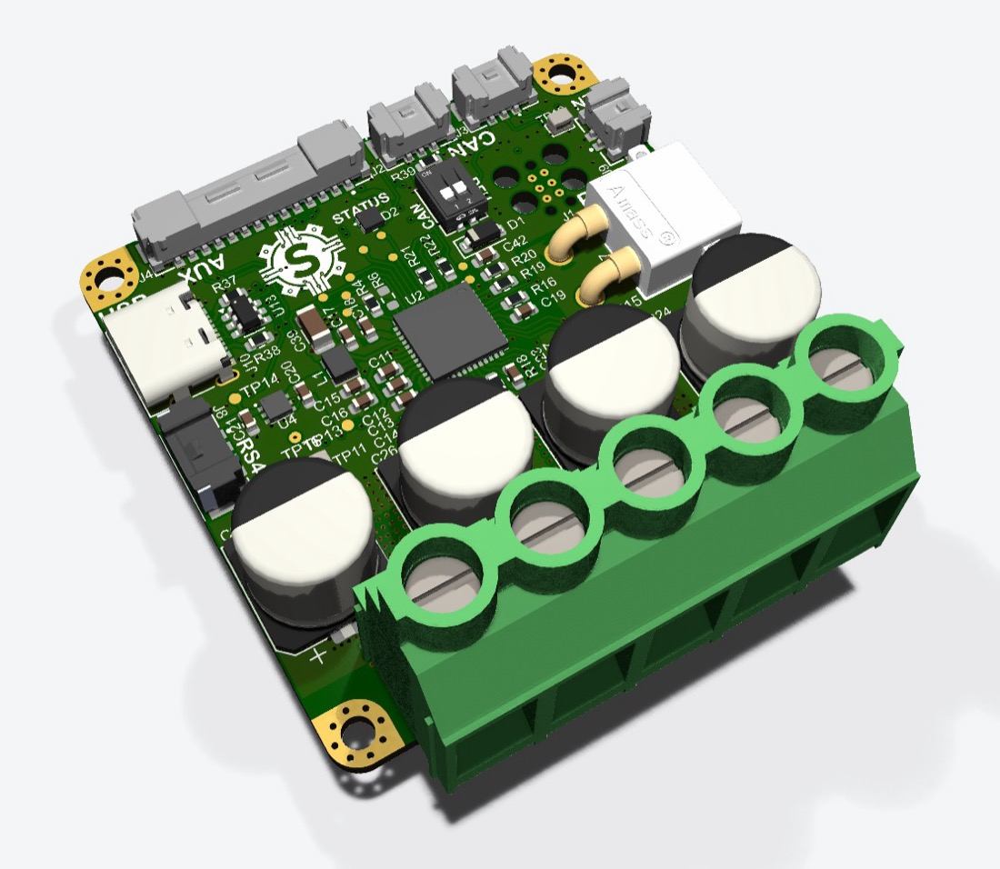
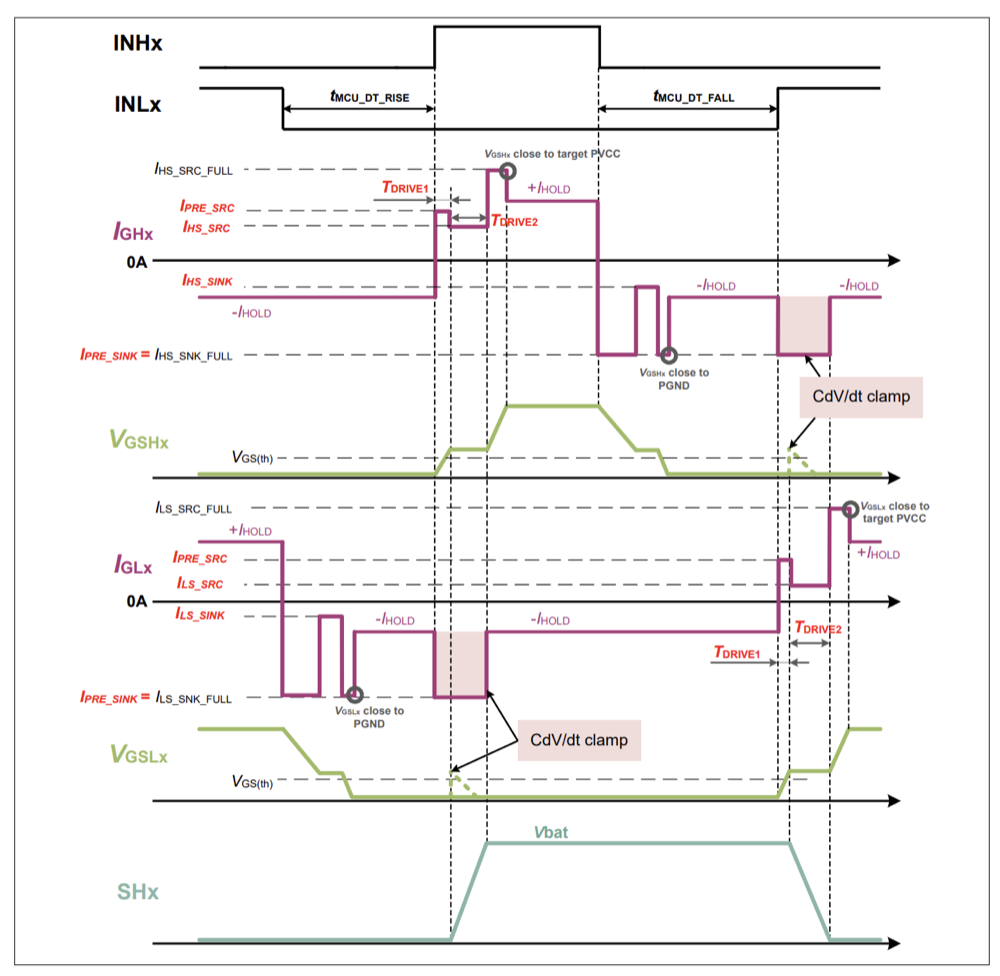
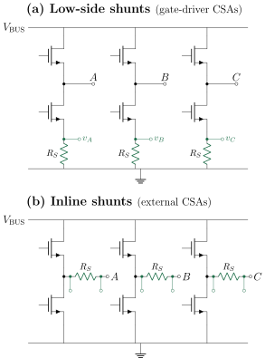

Overview
The 6DOF robot arm I built with my twin has one main limitation: it uses stepper motors. The coolest part about stepper motors is that they run open loop, which makes them very easy to control: all you need are step and direction pins. However, they have a major flaw. Their torque drops drastically as speed increases. As we start to build more dynamic robots, we will need actuators that can provide a good amount of torque at high speeds. For this, we are moving over to BLDC motors controlled using Field-Oriented Control (FOC). My role is to design the FOC driver for our upcoming actuator.

Design goals
- Voltage: 12–60 V
- Current: up to 50 A
- Dimensions: 50 × 50 mm (similar to ODrive/Moteus)
- Cost: Less than $30
MOSFET
The MOSFET is arguably the most important part of the driver. It is used in the inverter and it is responsible for converting the DC input into the AC voltage used to power the motor. When selecting a MOSFET, there were a lot of things I considered. The first was the voltage and current ratings, which should exceed my design ratings so the MOSFETs don’t get destroyed. Another factor that greatly affects MOSFET performance is thermal behavior. Even though most of the MOSFETs I considered had very high current ratings, thermal performance determines how much current we can actually run through them. So to choose a MOSFET, I calculated the power dissipated in each one (conduction, switching, and gate drive losses). Then I ranked them by junction temperature and chose the best one. Due to the space constraints of this board, I chose MOSFETs with a 5 × 6 mm footprint. The table below shows the results and the methodology.
Methodology
Every MOSFET is evaluated at the same operating point:
- Bus voltage \(V_{\mathrm{bus}} = 60\,\mathrm{V}\)
- Load current \(I = 20\,\mathrm{A}\)
- Duty \(D = 0.5\)
- Switching frequency \(f_{\mathrm{sw}} = 25\,\mathrm{kHz}\)
- Gate drive voltage \(V_{GS} = 10\,\mathrm{V}\)
- Switching speed limit \((dv/dt)_{\max} = 2\,\mathrm{kV/\mu s}\)
- Maximum gate current \(I_{g,\max} = 500\,\mathrm{mA}\) (the 6EDL7151’s highest programmable slew-rate current)
- \(R_{DS(\mathrm{on})}\) hot factor \(k_{\mathrm{hot}} = 1.6\) at \(T_j \approx 125\,{}^\circ\mathrm{C}\) (one estimate for every part)
- Ambient \(T_{\mathrm{amb}} = 25\,{}^\circ\mathrm{C}\), design limit \(T_{j,\mathrm{design}} = 125\,{}^\circ\mathrm{C}\)
Conduction loss uses the datasheet’s maximum \(R_{DS(\mathrm{on})}\) at 10 V, scaled up for temperature:
Switching loss. The drain voltage swings during the Miller plateau, so to switch at the dv/dt limit the driver has to deliver the plateau charge \(Q_{gd}\) within \(t_v\). If that needs more than the driver can source, the gate current is capped at \(I_{g,\max}\) and the edge is slower. The same current charges \(Q_{gs2}\) and \(Q_{gd}\); delay times are left out.
\(Q_{gs2}\) comes from the datasheet: the printed value if there is one, otherwise \(Q_{gs} - Q_{g(\mathrm{th})}\), otherwise \(Q_{sw} - Q_{gd}\), otherwise \(Q_{gs}\) as an upper bound.
Gate drive loss is the gate charge energy per cycle. It does not depend on the gate current, and with a current-source driver most of it is dissipated in the driver, so charging it to the MOSFET is conservative. It is small (under 0.1 W).
Junction temperature, with no heat sink, uses each datasheet’s steady-state \(R_{th(j\text{-}a)}\) on the manufacturer’s own test board (typically 1 in² / 6 cm² of copper, so boards differ). The parts are ranked from lowest to highest \(T_j\).
Not included: body-diode / dead-time loss, reverse recovery and \(C_{oss}\) loss.
Results
| Rank | Part | VDS (V) | RDS(on) (mΩ) | Igate (mA) | dv/dt (kV/µs) | Pcond (W) | Psw (W) | Pgate (W) | Ptotal (W) | Rth(j-a) (°C/W) | Tj (°C) |
|---|---|---|---|---|---|---|---|---|---|---|---|
| 1 | NTMFSC1D9N08X | 80 | 1.9 | 333 | 2.00 | 0.61 | 1.53 | 0.016 | 2.15 | 39 | 109.0 |
| 2 | TPH4R008QM | 80 | 4.0 | 410 | 2.00 | 1.28 | 1.32 | 0.014 | 2.61 | 50 | 155.6 |
| 3 | FDMS86300DC | 80 | 3.1 | 467 | 2.00 | 0.99 | 2.57 | 0.018 | 3.58 | 38 | 161.1 |
| 4 | BSC040N10NS5 | 100 | 4.0 | 400 | 2.00 | 1.28 | 1.50 | 0.015 | 2.79 | 50 | 164.7 |
| 5 | TPH3R10AQM | 100 | 3.1 | 500 | 1.36 | 0.99 | 1.92 | 0.021 | 2.93 | 50 | 171.6 |
| 6 | H100N10FB | 100 | 4.0 | 433 | 2.00 | 1.28 | 1.80 | 0.016 | 3.10 | 48 | 173.6 |
| 7 | TPH6R008QM | 80 | 6.0 | 253 | 2.00 | 1.92 | 1.42 | 0.009 | 3.35 | 50 | 192.5 |
| 8 | CSD19531Q5A | 100 | 6.4 | 220 | 2.00 | 2.05 | 1.34 | 0.009 | 3.39 | 50 | 194.7 |
| 9 | DI100N10PQ | 100 | 4.5 | 400 | 2.00 | 1.44 | 1.95 | 0.019 | 3.41 | 50 | 195.4 |
| 10 | AONS66917 | 100 | 3.5 | 367 | 2.00 | 1.12 | 2.37 | 0.020 | 3.51 | 50 | 200.6 |
| 11 | XPH4R10ANB | 100 | 4.1 | 500 | 1.88 | 1.31 | 2.28 | 0.019 | 3.61 | 50 | 205.5 |
| 12 | BSC072N08NS5 | 80 | 7.2 | 167 | 2.00 | 2.30 | 1.44 | 0.006 | 3.75 | 50 | 212.5 |
| 13 | RS6P060BH | 100 | 10.6 | 210 | 2.00 | 3.39 | 1.69 | 0.006 | 5.08 | 41.7 | 237.0 |
| 14 | H80N10FB | 100 | 3.6 | 383 | 2.00 | 1.15 | 2.70 | 0.017 | 3.87 | 55 | 237.8 |
| 15 | TPH8R808QM | 80 | 8.8 | 180 | 2.00 | 2.82 | 1.43 | 0.006 | 4.26 | 50 | 237.8 |
| 16 | AMR448N-CT | 100 | 4.4 | 500 | 1.62 | 1.41 | 2.55 | 0.017 | 3.98 | 56 | 247.6 |
| 17 | NVMFWS004N10MCT1G | 100 | 4.4 | 500 | 1.62 | 1.41 | 2.55 | 0.017 | 3.98 | 56 | 247.6 |
| 18 | RH6N040BH | 80 | 8.3 | 140 | 2.00 | 2.66 | 2.16 | 0.006 | 4.83 | 62.5 | 326.6 |
| 19 | CSD19534Q5A | 100 | 15.1 | 107 | 2.00 | 4.83 | 1.41 | 0.004 | 6.24 | 50 | 337.1 |
| 20 | RH6P040BH | 100 | 15.6 | 147 | 2.00 | 4.99 | 1.68 | 0.004 | 6.67 | 62.5 | 442.1 |
Losses per MOSFET at the operating point above. The NTMFSC1D9N08X (highlighted) is the part I used. One more candidate, the AMR448N, is not ranked because its datasheet does not give Qg at 10 V.
Gate driver
Most gate drivers I see in FOC projects use TI gate drivers. However, the TI part with the voltage rating I need, the DRV8353S, costs $4.27 per unit, so I looked for alternatives. I found the 6EDL7151XUMA1 by Infineon. One of the main reasons I chose it is that it allows finer control over the MOSFETs’ switching profile: the gate current can be configured separately for 4 stages of each switching transition, compared to a single setting on the TI. It also has a programmable gate voltage, better current shunt amplifier specs, and, most importantly, it is cheaper than the TI. It comes in at $2.55, about 40% cheaper than the TI.

Current sense topology
The current control loop needs current feedback to work. For sensing the current, I went with low-side sensing instead of inline sensing. The main reason I went this route was cost. Inline sensing needs an external current sense amplifier (CSA). CSAs that can match the specs I need are over $2 each, and since I need 3, that would increase the BOM cost significantly. Low-side sensing, on the other hand, is supported by the internal CSAs in the gate driver, so there is no additional BOM cost.

Magnetic encoder
The FOC algorithm needs position feedback to work. The cheapest way I could find was using a magnetic encoder paired with diametrically magnetized magnets placed on the rotor. The magnetic encoder uses the orientation of the magnet to determine the angular position of the rotor. I needed a magnetic encoder that has both a serial interface and incremental encoder signals. I chose the Allegro A1333. Its serial angle output is 12-bit, just like other encoders in this price range, but its incremental interface has 13-bit resolution. Other magnetic encoders in this price range don’t have incremental interfaces with such high resolution.
MCU & other circuitry
I chose the STM32C5 series because it is very cheap, starting at around $2. I specifically went with the STM32C5A3RGT6 because it has 3 ADCs, so I can measure all 3 phases at the same time. It also has four 32-bit timers. I only need one, for the incremental encoder, but I haven’t seen another ST chip this cheap with four, so that really surprised me. I also added a CAN transceiver and an RS-485 driver for communicating with external encoder PCBs.